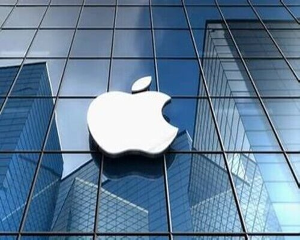
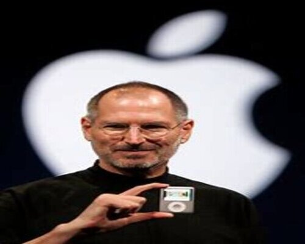

Apple Inc., originally named Apple Computer, Inc., is a multinational corporation that creates and markets consumer electronics and attendant computer software, and is a digital distributor of media content. Apple's core product lines are the iPhone smartphone, iPad tablet computer, and the Macintosh personal computer. The company offers its products online and has a chain of retail stores known as Apple Stores. Founders Steve Jobs, Steve Wozniak, and Ronald Wayne created Apple Computer Co. on April 1, 1976, to market Wozniak's Apple I desktop computer, and Jobs and Wozniak incorporated the company on January 3, 1977, in Cupertino, California.

Steve Jobs and Steve Wozniak, referred to collectively as "the two Steves", first met in mid-1971, when their mutual friend Bill Fernandez introduced then 21-year-old Wozniak to 16-year-old Jobs. Their first business partnership began in the fall of that year when Wozniak, a self-educated electronics engineer, read an article in Esquire magazine that described a device that could place free long-distance phone calls by emitting specific tone chirps. Wozniak started to build his original “blue boxes”, which he tested by calling the Vatican City pretending to be Henry Kissinger wanting to speak to the pope. Jobs managed to sell some two hundred blue boxes for $150 each, and split the profit with Wozniak. Jobs later told his biographer that if it hadn't been for Wozniak's blue boxes, "there wouldn't have been an Apple.
